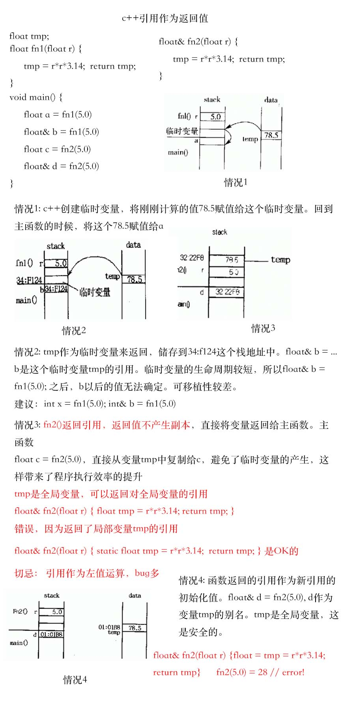
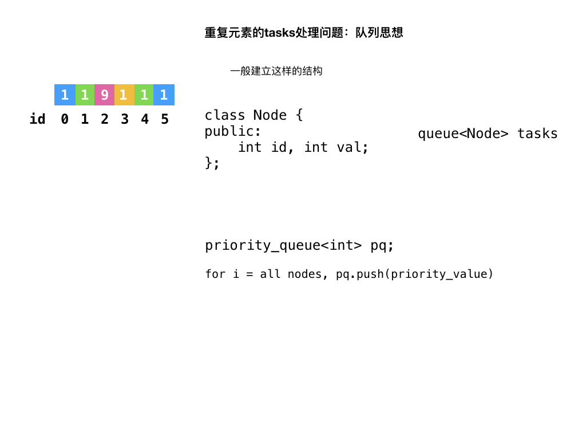
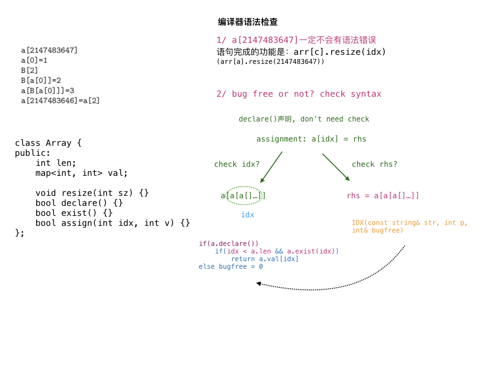

这里继续讲一些STL中常用的算法与数据结构
简易搜索引擎 Searching the Web
算法分析：

1 2 3 4 5 6 7 8 9 10 11 12 13 14 15 16 17 18 19 20 21 22 23 24 25 26 27 28 29 30 31 32 33 34 35 36 37 38 39 40 41 42 43 44 45 46 47 48 49 50 51 52 53 54 55 56 57 58 59 60 61 62 63 64 65 66 67 68 69 70 71 72 73 74 75 76 77 78 79 80 81 82 83 84 85 86 87 88 89 90 91 92 93 94 95 96 97 98 99 100 101 102 103 104 105 106 107 108 109 110 111 112 113 114 115 116 117 118 119 120 121 122 123 124 125 126 127 128 129 130 131 132 133 134 135 136 137 138 139 140 141 142 143 144 145 146 147 148 149 150 151 152 153 154 155 156 157 158 159 160 161 162 163 164 165 166 167 168 169 170 171 172 173 174 175 176 177 178 179 180 181 182 183 184 185 186 using namespace std; typedef set <int> intSet; vector<string> all; intSet emptySet; struct Doc { // map<string, intSet> index; intSet lineID; void addline(const string& str, int idx) { // string buf; lineID.insert(idx); for (int i = 0; i < str.size(); i++) { char c = str[i]; if (isalpha(c)) { buf.push_back(tolower(c)); } else if (!buf.empty()) { // index[tmp] = idx; index[buf].insert(idx); buf.clear(); } } if (!buf.empty()) { index[buf].insert(idx); buf.clear(); } } // when query: for (auto& id : index[buf]) cout << all[id] << endl; const intSet& findWord(const string& w) { if(!index.count(w)) return emptySet; return index[w]; } }; vector<Doc> article; void getword(const string& str, vector<string>& qwords) { qwords.clear(); stringstream ss(str); string tmp; while(ss >> tmp) { qwords.push_back(tmp); } } void printAns(const intSet& ans) { for(auto& p : ans) cout << all [p] << endl; } void query(const vector<string>& qwords) { // const string& one = qwords.front(); const string& two = qwords.back(); bool match, first = true; bool flag = true; if(qwords.size() == 1) { for(int i = 0; i < article.size(); i++) { Doc& atc = article[i]; // check atc.index const intSet& bufID = atc.findWord(one); if(bufID.empty()) match = false; else match = true; if(!match) continue; if(first) first = false; else cout << "----------" << endl ; printAns(bufID); flag = false ; } } if (qwords.size() == 2) { for (int i = 0; i < article.size(); i++) { Doc& atc = article[i]; const intSet& bufID = atc.findWord(two); if (bufID.empty()) match = true ; else match = false ; if (!match) continue ; if (first) first = false ; else cout << "----------" << endl; printAns(atc.lineID); flag = false; } } if(qwords.size() == 3) { for(int i = 0; i < article.size(); i++) { Doc& atc = article[i]; const intSet& ans1 = atc.findWord(one); const intSet& ans2 = atc.findWord(two); if(qwords[1] == "AND") { // if(!ans1.empty() && !ans2.empty()) match = true; else match = false; } else if(qwords[1] == "OR") { // if(!ans1.empty() || !ans2.empty()) match = true; else match = false; } if(!match) continue; vector<int> ans(ans1.size() + ans2.size()); vector<int>::iterator last = set_union(ans1.begin(), ans1.end(), ans2.begin(), ans2.end(), ans.begin()); if(first) first = false; else cout << "----------" << endl ; for (auto p = ans.begin(); p != last; p++) cout << all[*p] << endl; flag = false; } } if(flag) cout << "Sorry, I found nothing." << endl; cout << "==========" << endl; } int main() { int N, M; string line; cin >> N; getline(cin, line); article.resize(N); // fresh string cout << line; for(int i = 0; i < N; i++) { while(true) { Doc& atc = article[i]; getline(cin, line); if(line == "**********") break; // atc.addline() all .push_back(line); atc.addline(line, all.size()-1); } } // get all articles /* for (int i = 0; i < N; i++) { Doc& atc = article[i]; for (auto it = atc.index.begin(); it != atc.index.end(); it++) { cout << it->first << ": " << endl; for(auto p : it ->second) cout << all[p] << endl; } cout << "---------" << endl; } */ cin >> M; getline(cin, line); vector<string> qwords; for(int i = 0; i < M; i++) { getline(cin, line); getword(line, qwords); query(qwords); } }
重复元素的模拟：队列法 printer queue

1 2 3 4 5 6 7 8 9 10 11 12 13 14 15 16 17 18 19 20 21 22 23 24 25 26 27 28 29 30 31 32 33 34 35 36 37 38 39 40 41 42 43 44 45 46 47 48 49 50 51 52 53 54 55 56 57 58 59 60 61 62 63 64 65 66 67 68 69 70 71 72 73 74 75 76 77 78 79 80 81 82 83 84 85 86 87 88 89 90 91 92 // // main.cpp // LA3638 // // Created by zhangmin chen on 2019/5/18. // Copyright © 2019 zhangmin chen. All rights reserved. // using namespace std; typedef long long llong; typedef set <string>::iterator ssii; // we need to deal with the same priority class Task { public: int id, num; Task(int id_ = 0, int num_ = 0) : id(id_), num(num_) {} }; queue<Task> tasks; priority_queue<int> pq; void init while (!tasks.empty()) tasks.pop(); while (!pq.empty()) pq.pop(); } int n, m; int main freopen("input.txt" , "r" , stdin); int kase; cin >> kase; while (kase--) { // init(); cin >> n >> m; _for(i, 0, n) { int val; cin >> val; pq.push(val); tasks.push(Task(i, val)); } int ans = 0; while (true ) { if (pq.empty()) break ; int v = pq.top(); Task t = tasks.front(); tasks.pop(); if (t.num == v) { pq.pop(); ans++; if (t.id == m) { // cout << ans << endl; break; } } else tasks.push(t); } cout << ans << endl; } }
STL set实现边插入边排序 Borrowers
1 2 3 4 5 6 7 8 9 10 11 12 13 14 15 16 17 18 19 20 21 22 23 24 25 26 27 28 29 30 31 32 33 34 35 36 37 38 39 40 41 42 43 44 45 46 47 48 49 50 51 52 53 54 55 56 57 58 59 60 61 62 63 64 65 66 67 68 69 70 71 72 73 74 75 76 77 78 79 80 81 82 83 84 85 86 87 88 89 90 91 92 93 94 95 96 97 98 99 100 101 102 103 104 105 106 107 108 109 110 111 112 113 114 115 116 117 118 119 120 121 122 123 124 125 126 127 128 129 130 // // main.cpp // LA5169 // // Created by zhangmin chen on 2019/5/18. // Copyright © 2019 zhangmin chen. All rights reserved. // using namespace std; typedef long long llong; typedef set <string>::iterator ssii; typedef set <int>::iterator si; class Book { public: string title, author; Book(string title_ = "" , string author_ = "" ) : title(title_), author(author_) {} bool operator< (const Book& rhs) const { return author < rhs.author || (author == rhs.author && title < rhs.title); } }; map<string, int> idx; vector<Book> books; class Cmp { public: bool operator() (const int& lhs, const int& rhs) const { return books[lhs] < books[rhs]; } }; set <int, Cmp> libs, pools;void borrow(const string& bKName) { int id = idx[bKName]; if (libs.count(id)) libs.erase(id); else pools.erase(id); } void retBook(const string& bkName) { int id = idx[bkName]; pools.insert(id); } void shelve // for (si i = pools.begin(); i != pools.end(); i++) { // int id = *i; si p = libs.insert(id).first; if (p == libs.begin()) { // first cout << "Put " << books[id].title << " first" << endl; } else { p--; int pid = *p; cout << "Put " << books [id].title << " after " << books[pid].title << endl; } } pools.clear(); cout << "END" << endl; } void init() { idx.clear(); books .clear(); pools.clear(); libs.clear(); } int main freopen("input.txt" , "r" , stdin); string line; init(); while (true ) { getline(cin, line); if (line == "END" ) break ; int p = (int)line.find(" by " ); string title = line.substr(0, p); string author = line.substr(p+4); int id = (int)books.size(); idx[title] = id; books.push_back(Book(title, author)); } // then we finished get all books _for(i, 0, books.size()) libs.insert(i); string cmd, title; while (true ) { getline(cin, line); if (line == "END" ) break ; cmd = line.substr(0, 6); if (cmd[0] == 'S' ) shelve(); else { title = line.substr(cmd.size()+1); if (cmd[0] == 'B' ) borrow(title); else retBook(title); } } }
编译器语法检查 POJ3524

1 2 3 4 5 6 7 8 9 10 11 12 13 14 15 16 17 18 19 20 21 22 23 24 25 26 27 28 29 30 31 32 33 34 35 36 37 38 39 40 41 42 43 44 45 46 47 48 49 50 51 52 53 54 55 56 57 58 59 60 61 62 63 64 65 66 67 68 69 70 71 72 73 74 75 76 77 78 79 80 81 82 83 84 85 86 87 88 89 90 91 92 93 94 95 96 97 98 99 100 101 102 103 104 105 106 107 108 109 110 111 112 113 114 115 116 117 118 119 120 121 122 123 124 125 126 127 128 129 130 131 132 133 134 135 136 137 138 139 140 141 142 // // main.cpp // POJ3524 // // Created by zhangmin chen on 2019/5/18. // Copyright © 2019 zhangmin chen. All rights reserved. // using namespace std; typedef long long llong; typedef set <string>::iterator ssii; const int inf = 0x3f3f3f3f; const int maxn = 256; class Array { public: int len; map<int, int> val; void remove len = -1; val.clear(); } Array void resz(int sz) { len = sz; val.clear(); } bool declare return len >= 0; } bool exist(int id) { if (val.count(id)) return true ; else return false ; } bool assign(int idx, int v) { if (idx >= len) return false ; val[idx] = v; return true ; } }; Array arr[maxn]; // string a[] = xxx int IDX(const string& str, int p, bool& bugfree) { if (isdigit(str[p])) { int ans = 0; while (isdigit(str[p])) { ans = ans * 10 + str[p] - '0' ; p++; } return ans; } else if (isalpha(str[p])) { // str[p]: name char c = str[p]; int id = IDX(str, p+2, bugfree); Array& ar = arr[c]; if (ar.declare()) { // // if exist arr[c].val[idx], return value of val[idx] // else bugfree = false if (id < ar.len && ar.exist(id)) return ar.val[id]; else bugfree = 0; } else bugfree = 0; } return 0; } int main freopen("input.txt" , "r" , stdin); int bugL = 0, L = 0; string line; while (getline(cin, line)) { if (line[0] == '.' ) { if (L) printf ("%d\n" , bugL); _for(i, 0, maxn) arr[i].remove(); bugL = 0; L = 0; continue ; } if (bugL) continue ; int p = (int)line.find('=' ); if (p != string::npos) { // bool bugfree = true ; string lhs = line.substr(0, p); int idx = IDX(lhs, 2, bugfree); int rhs = IDX(line, p+1, bugfree); Array& ar = arr[line[0]]; if (bugfree && ar.declare() && ar.assign(idx, rhs)) L++; else bugL = L + 1; } else { // declare but not init char name; int idx; sscanf(line.c_str(), "%c[%d]" , &name, &idx); arr[name].resz(idx); L++; } } }
数据结构过滤器 UVA11995
数据结构过滤器可能只进数据，不出数据 这是潜在的bug int tot = 0, 在出数据的时候统计个数
1 2 3 4 5 6 7 8 9 10 11 12 13 14 15 16 17 18 19 20 21 22 23 24 25 26 27 28 29 30 31 32 33 34 35 36 37 38 39 40 41 42 43 44 45 46 47 48 49 50 51 52 53 54 55 56 57 58 59 60 61 62 63 64 65 queue<int> que; priority_queue<int> pq; stack<int> stk; int n; void init while (!que.empty()) que.pop(); while (!pq.empty()) pq.pop(); while (!stk.empty()) stk.pop(); } int main freopen("input.txt" , "r" , stdin); while (scanf("%d" , &n) != EOF) { init(); int cmd, v; int tot = 0; int cntPQ = 0, cntS = 0, cntQ = 0; _for(i, 0, n) { scanf("%d%d" , &cmd, &v); if (cmd == 1) { que.push(v); pq.push(v); stk.push(v); } else if (cmd == 2) { tot++; int xPQ = 0, xQ = 0, xS = 0; if (!que.empty()) { xQ = que.front(); que.pop(); } if (!pq.empty()) { xPQ = pq.top(); pq.pop(); } if (!stk.empty()) { xS = stk.top(); stk.pop(); } if (xQ == v) cntQ++; if (xS == v) cntS++; if (xPQ == v) cntPQ++; } } if ( (cntPQ == tot && cntS == tot) || (cntPQ == tot && cntQ == tot) || (cntS == tot && cntQ == tot) ) printf ("not sure\n" ); else if (cntQ == tot) printf ("queue\n" ); else if (cntS == tot) printf ("stack\n" ); else if (cntPQ == tot) printf ("priority queue\n" ); else printf ("impossible\n" ); } }
 微信
微信 支付宝
支付宝